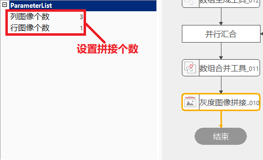

图像拼接是指将多幅来自同一场景的具有一定重叠区域的小尺寸图像合成为一幅大型的无缝高分辨率图像的技术，这些图像可以是在不同时间、不同视角或者不同传感器获得。灰度图像拼接工具，即所拼接的图像只能是灰度图像，拼接后输出的结果也是灰度图像。
由于面阵相机的视野和分辨率有限，有时单个相机可能无法满足大视野、大幅面，这时需要将多个相机获取的图像进行拼接处理，可以使用灰度图像拼接工具。
图像拼接的功能是将两到多幅图像组合为一幅结果图像。输入图像可以是单相机移动拍摄或多相机图像。拼接时需要考虑多幅图像通过算法变换成统一大小尺寸的图像。
图像拼接过程中，只做边缘拼接。拼合过程中，输入的图像小于M×N（行列所需要的小图个数）时，用128灰度值补齐图像；输入的图像大于M×N时，增加行数适应拼合后图像大小。

| 现象描述 | 解决方法 |
|---|---|
| 错误栏输出初始化失败 | 检查数据链是否链入图像数组。 |
| 参数名称 | 参数说明 |
|---|---|
| 输入图像组 | 需要拼接的灰度图像集合。 |
| 行数 | 拼接大图的行数。 |
| 列数 | 拼接大图的列数，列为基数，重新计算行数。 |
| 参数名称 | 参数说明 |
|---|---|
| 输出图像 | 输出拼接后的灰度图像。 |
| 执行结果 | 工具执行结果。 |
| 执行时间 | 工具执行时间。 |
参见“\Samples\灰度图像拼接工具.gvp”。